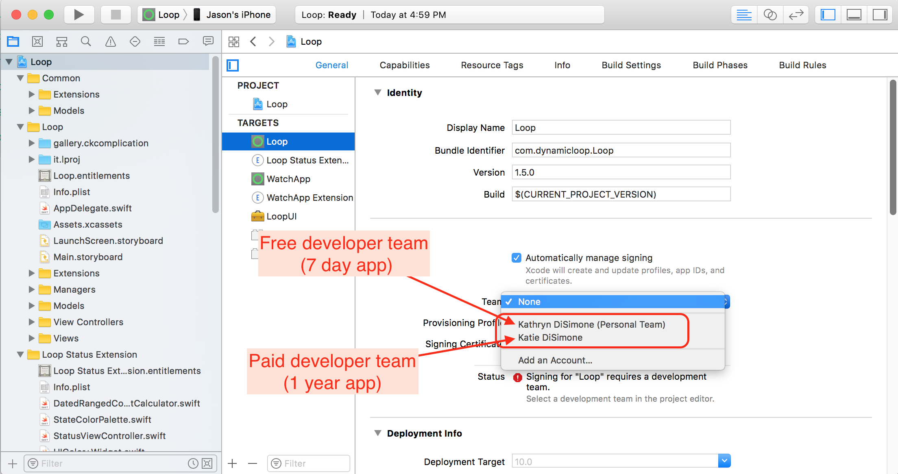
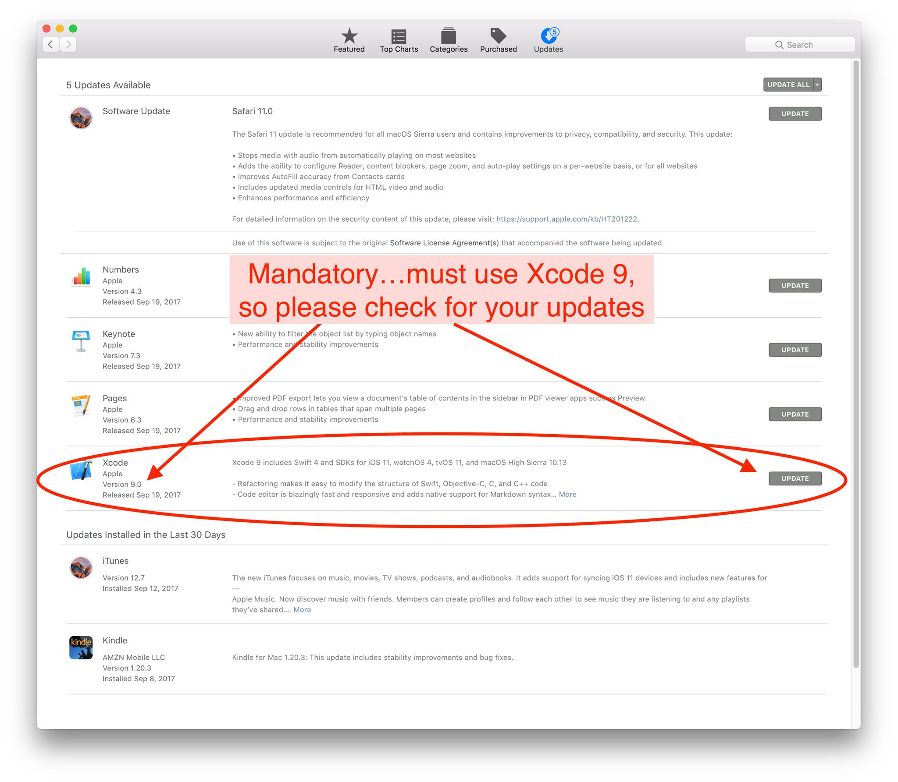

Installing Loop⌁
The overall installation process is pretty simple. Loop is written in code that is stored online; available for us to download for free. In order to compile all that code into a useable app on your iPhone, we need to use a free Apple program called Xcode. Xcode takes all that code & makes an app...but Apple is particular about apps and installation on devices. So, in order to put this app on our iPhones, we have to enroll in Apple's Developer Program. Once you enroll as a developer, you will be able to "sign" the Loop app in Xcode so that it will properly install onto your iPhone.
While all of this is straight forward...I'll tell you some hints upfront to save time.
- Check your watchOS, iPhone OS, macOS first to see if they need updates. Currently you'll need at least watchOS 4, iOS 10.3.3 (or iOS 11 if you are using an Apple watch) , macOS 10.12.6
- Downloading Xcode 9 can take 20-45 minutes depending on your internet connection speed. You can do that ahead of time if you want to save yourself some waiting when you're ready to build.
- Apple watches need to be paired with the iPhone BEFORE the Loop app is built onto the phone in order to have the Loop on the watch, too. If you pair a new Apple watch later, you'll have to rebuild the Loop app onto the iPhone again, before the watch will work with Loop functions.
Setup your Apple Computer⌁
Verify macOS⌁
You need to be running macOS Sierra, at least version 10.12.6, so verify by clicking the apple logo in your computer display's upper left corner and selecting "About this Mac"

If your macOS is not Sierra, click on the Software Update button and update to Sierra. If your computer is older than late 2009, you may not be able to update to Sierra. You can check Sierra compatibility here.
Install Homebrew and Carthage⌁
Open the Terminal application on your computer. It is located in the Applications folder, and then look in the Utilities subfolder for the Terminal application.
- Copy and paste the line below into Terminal prompt. Press return after you paste it in.
/usr/bin/ruby -e "$(curl -fsSL https://raw.githubusercontent.com/Homebrew/install/master/install)"
- There will be a prompt asking if you want to continue. Press return to continue, then it may prompt for your password. Enter your computer user password (don't worry, Terminal app doesn't show keystrokes when you enter passwords, but it is still reading your typing). Wait while the script does its thing...you’ll see info scroll by and then it will pause for awhile. Eventually, it will be done and you’ll see something that says “Installation successful” and you’ll have a ready Terminal prompt again.

-
Type
brew updateand press return. -
Type
brew install carthageand press return. You can confirm carthage has been installed by runningcarthage version.
You can close the Terminal application now. You’re done with it. You do not need to do these steps again for any subsequent Loop builds.
Setup your Apple Developer Account⌁
In order to build your own copy of the Loop app onto your iPhone, you will need an Apple developer account. You will have two options for your individual account; free or paid.
If you decide to enroll in a FREE developer account, here's what you need to know:
- Loop apps signed with a free developer team will expire after 7 days. On the 7th day, your Loop app will simply turn white when you open it and then immediately close. To rebuild the Loop app, you will have to find a computer and rebuild the app onto your iPhone again. You cannot rebuild the app on day 5 (when it is convenient, for example)...hoping to reset the 7-day clock. The app will still expire on the 7th day from when it was first signed and created.
- If you decide to switch to a paid account after trying out the free account, you will need to rebuild your Loop app with a new main app bundle identifier (this will make sense when you go through the rest of these instructions...just make a mental note for now) and sign with the new team name.
To activate enrollment in a free developer account, you simply need to add your Apple ID to the Xcode application's Preferences in the Accounts tab, as outlined in the Xcode section below. (Note: The Apple ID you use to sign up for the developer account does not need to be the same Apple ID as the Looping iPhone uses, for example parent's installing Loop on kid's iPhone. Typically for the developer account, use the Apple ID of the person who will be doing the Loop app building.) You don't have to specifically go into the Apple Developer Program website to enroll...Xcode automatically amends your Apple ID to include the free developer signing. Once you add your Apple ID, you will see a team name listed, like the screenshot below, with a (personal team) designation to indicate that is a free developer team.

If you decide to enroll in a PAID developer account, here's what you need to know:
- Loop apps signed with a paid developer team will last for a full year.
- The paid developer account is $99 per year and is default set to auto-renew annually. You can change that selection in your developer account settings at any time.
To activate a paid account, go to the Apple Developer website to sign-up for your individual account. (Note: The Apple ID you use to sign up for the developer account does not need to be the same Apple ID as the Looping iPhone uses, for example parent's installing Loop on kid's iPhone. Typically for the developer account, use the Apple ID of the person who will be doing the Loop app building.) After you enroll, make sure you look for a confirmation email. Apple says it can take up to 24 hours to confirm and setup a new Apple developer account, however some people have had the process only take minutes. It can vary.
Periodically, Apple will update the license agreement for the Developer Program. When that happens, you'll need to login to your developer account and accept the new license agreement before you can sign a new/updated Loop app again.
Setup Xcode⌁
Open the App Store application on your computer. Search for Xcode and click on the link to download/install Xcode for free. The file size is fairly large so expect about 20-45 minutes to download depending on your internet speed. You will need Xcode 9 at least to build the current Loop app. If you have a previous installation of Xcode, please make sure to check for updates first, before building Loop.

Once you have Xcode downloaded, open it from your Applications folder. There may be a short delay as Xcode installs new command lines that the app uses. Once Xcode is open and ready, we will start with adding your new developer account to Xcode.
Go to the Xcode main menu (top left of your screen) and select Preferences from the Xcode dropdown menu. Then, click on the “Accounts” tab in the Preferences window and then press the + in the lower left corner to add an Apple ID account.

If you are establishing a free developer account, you will simply enter your Apple ID in this section and Xcode will automatically create your free developer account. If you enrolled in the paid account, enter the Apple ID of the paid developer account. If you never enrolled in the free account, you will not have a (personal team) showing. The screenshot is what will appear if you have used both types of enrollment under the same Apple ID.

Finally, we are going to turn on Line Numbers to make some later steps in the build process easier. Go to the "Text Editing" tab in the top of the Preferences window. Click the box to show Line Numbers.

You are now done setting up your Xcode environment. Great job! You will not need to redo the account setup steps on any subsequent builds or updates of your Loop app. Xcode will remember these settings.
Download Loop Source Code⌁
Next, you’ll need to obtain the Loop’s source code in order to build the app on your computer. If you click on the link below, a copy of the Loop source code’s master branch will be downloaded to your Downloads folder.
Loop: Master branch source code
FYI: The Loop source code resides in GitHub within a repository. A repository is kind of like a project's bookshelf, holding various books (aka branches) of a project. The master branch is considered a stable version. Any new features or options are first tested in a dev (short for "development") branch of the Loop. New or inexperienced users should not build from the dev branch of Loop. So if you hear of "new features in dev", these are things that may be eventually merged into the master branch once any bugs are worked out.IMPORTANT NOTES: Best practice is to leave your Loop source code in your Downloads folder. If you store your Loop code a different folder than Downloads (such as your Documents folder or Desktop), make sure the specified folder is not an iCloud drive. Storing your Loop code in an iCloud drive folder will prevent Loop from building successfully. How do you know if a folder is an iCloud drive? Check your System Preferences. If your System Preferences for iCloud is set as shown below, your Documents and Desktop folders are iCloud drives and NOT appropriate places to save your Loop download.

Loop-master. HOWEVER, if you already have an existing Loop-master folder from a previous download, the name of the next download will be something like Loop-master (1). The problem with that folder name is that it contains a space...and spaces in the name will cause your Loop build to fail. So, either delete old copies of Loop before downloading/unzipping or rename the folder(s) to ensure that NO SPACES are in the folder name.

Advanced method: Alternatively, if you are already familiar with git and Terminal app use, you could save a local copy of Loop source code to your computer using git clone https://github.com/LoopKit/Loop.git. This method would allow for saving local changes and updating, but does require some familiarity with git commands. For new users, or those unfamiliar with git, we recommend using the direct download of master branch, above. Loop is easily rebuilt and doesn't need to be saved locally long-term.
Installing Loop using Xcode⌁
Here’s where the fun really begins. You’re about to build your Loop app.
Go to your Downloads folder, open the Loop-master folder (or whatever you named it...double check that the folder does not contain any spaces in the folder name, as described above), and double click on Loop.xcodeproj.

A warning may appear asking if you really want to open it, click Open. Xcode will get itself organized and installed, this may take a few minutes. The first time you load Xcode you may also be asked about allowing keychain access (yes, always). Xcode will eventually open the Loop project...the first open of Xcode just takes a little longer than subsequent uses.

Once Xcode has finished indexing, the Loop project's various folders and files will appear in the far left column. Scroll all the way down to the bottom of the list and then click on the file called Loop.xcconfig. The middle portion of Xcode window will populate and this is where you will find the MAIN_APP_BUNDLE_IDENTIFIER. The default is com.loopkit

You need to change the MAIN_APP_BUNDLE_IDENTIFIER to your own unique identifier. Keep it in the reverse-domain syntax, meaning start with com. and without any extensions after your chosen identifier. The example below uses dynamicloop to replace the default loopkit...you choose your own phrase/name without spaces or periods. If some other Looper has already used the same phrase, you will get a build error later in this build process...so make your name somehow slightly personal to you. Hint: you can't use com.dynamicloop or com.loopkit or com.loudnate for example because other Loopers have already used them. After you enter your new MAIN_APP_BUNDLE_IDENTIFIER, save the project using Command-S

After saving the project, scroll back up to the top of the file list in the left-hand column. At the very top, click on the blue Loop main project folder. Then click on the box in the middle screen to reveal the targets' column. The four targets we will sign in the upcoming steps are now easily viewable.

Connect your iPhone via cable to the computer, select your iPhone from the very top of the drop down list. Your iPhone’s personal name should be at the top of the list. Don't accidentally select the generic iOS simulators listed below your iPhone's name. If your iPhone has a lock enabled, it may be helpful to temporarily disable the lock until you finish building Loop app. Xcode has a hard time building to locked iPhones. You can reset your lock once Loop is done building onto the phone.


These next steps are usually only needed on the first Loop build; they can be skipped on subsequent builds.
- If this is the first time your iPhone has been plugged in to this computer, you will need to open the iPhone and select "Trust this Computer" before your device will be useable in the menu selection.
- If this is the first time you are building an app onto this iPhone using this particular Apple developer account, you will need to “register the device” to your developer account. The device registration screen, as shown below, should automatically appear when your iPhone is selected.


Once you select your device (iPhone), let's start signing our four targets. We will start with the Loop target, the first one on the target list. Under the "Signing" area, select the dropdown menu where it currently says "none". Choose your team that you'd like to sign with. If you select a team name with (personal team), your app will expire after 7 days. If you select a team name without that (personal team), your app will last a full year. If you never signed up for a free developer account, you will not have a (personal team) showing. Make sure you keep the "automatically manage signing" box checked above the team selection area.

Once you choose your signing team, Xcode will automatically generate provisioning profiles and signing certificates. If this is the first time you are building on this iPhone with this developer account, you may again be prompted to register the device. Simply click on the "Register Device" button to confirm.

A successfully signed target will have a provisioning profile and signing certificate similar to the screenshot below. Click on each of the three remaining targets, and repeat the signing steps by choosing the same team name as you selected in the first target.

If instead, you saw an error message like below then you will need to make a correction. Remember how we said you needed to make a unique name in the previous steps? You have either (1) failed to use a unique-to-you main app bundle ID or (2) failed to save the project after changing the main app bundle ID earlier. Go back to the starting steps in building the Loop app, in the Loop.xcconfig file where you changed com.loopkit. Pick a new main app bundle ID and press command-s to save the project. Then return to re-sign the targets with the updated info.

Do you want customizations before you finish building?
New Loop users: Customizations are not a required part of any Loop build. As you gain experience in how you use your Loop app, you may want to customize some of the features. You can always update your Loop app to add customizations at a later time. Really though, building with the standard, default installation is JUST FINE. If you want any custom configurations to your Loop or Watch apps, now is the time to make them before you finish with the last step of Loop installation on your iPhone. Follow the step-by-step instructions (found by clicking on the "Code Customizations" link to the left or scrolling down to the bottom of this page). When you’ve completed those customizations, please return here and follow the next steps to finish the installation of Loop.
Have you paired your Apple Watch already?
New Apple Watch users: If you have an unopened Apple watch and want to use it with Loop, first pair the watch with the iPhone before continuing to the next steps. If you get a new watch after building the Loop app, you'll need to redo your Loop build. (Don't worry, it's as easy as pressing play on your saved Loop project.) Existing Apple Watch users: Please update your watchOS prior to building Loop app. The current version of Loop (v1.5) requires watchOS 4.
All done with any customizations? Have your Apple watch paired and updated? Let’s finish the installation of the Loop app onto your iPhone. Double check to make sure your iPhone's name is still selected and then press the “play” button (or build button) to start Xcode on its way. You’ll see the progression of the build in the status window. If the build is successful, you'll see a brief pop-up graphic saying "Build succeeded" and then it will say "running Loop" in the status bar. (Troubleshooting tips for common build errors are below, too...scroll down)

If this is the first time you have installed an app on your iPhone using your Developer Account, you may get a warning like this. Just follow the directions in the warning for what you need to do in your iPhone settings, and the issue resolves very quickly. Click ok and you can safely disconnect your iPhone from the computer. (If you don’t get a warning and the Loop app installs but does not open, you may still need to go to Settings->General->Device Management and enable trust for your Developer Account.)

You can confirm Loop has installed on your phone simply by looking on the iPhone. Turn it on and check if the Loop app is running. Brand new Loop apps will usually have a screen open immediately asking about allowing Loop notifications and Health App access. Updated Loop apps won't usually show any special screen after a successful build.
CONGRATS! YOU JUST INSTALLED LOOP! You can now begin configuring your Loop settings.
Build Errors⌁
Yellow Error Alerts⌁
Yellow error alerts do not cause the build to fail, those are just warnings. Occasionally, a Loop version may have some minor discrepencies that cause a yellow alert...but you can ignore those.

Red Error Alerts⌁
Red error alerts will prevent Loop from building on your phone, and you can read what the failure was. The most common red error alerts are:
- "The Apple Developer Program License Agreement has been updated, In order to access certain membership resources, you must accept the latest license agreement." You'll need to log onto your developer account at developer.apple.com and accept the latest license agreement.

- "Swift Language Version” (SWIFT_VERSION) is required to be configured correctly for targets which use Swift. Use the [Edit > Convert > To Current Swift Syntax…] menu to choose a Swift version or use the Build Settings editor to configure the build setting directly" or also "Could not locate device support files. This iPhone is running iOS 11, which may not be supported by this version of Xcode." You will need to go to your computer's App Store and install the Xcode app update.



- "Swift Compilier Error. Module compiled with Swift 3.1 cannot be imported in Swift 3.2" Make sure your Xcode and Loop source code are updated (see item above). Older Loop versions (older than v1.5) will not compile with the new Xcode 9 app.

- "Embedded Binary Validation Utility. error: Embedded binary's bundle identifier is not prefixed with the parent app's bundle identifier". This error usually happens because you've used an incorrect syntax in the MAIN_APP_BUNDLE_ID (like adding an extension to it) or forgotten to save project after the MAIN_APP_BUNDLE_ID was changed (the save forces Xcode to update all the targets to use the Main App Bundle ID within their individual bundle names). In any case however, usually this error is most easily solved by closing out your project, deleting the download folder, and starting with a fresh download of Loop app. The next time you build, make sure to follow the directions carefully to use a MAIN_APP_BUNDLE_ID in the right format and press
command-sto force Xcode to update the targets' naming scheme correction.
- "Abort with payload" Your app will only open briefly with a with screen and then close, if you build with this error. This error message is cause by having your Loop folder either (1) saved into an iCloud mapped drive or (2) having a space in the name of your downloaded Loop source code folder. Rename the folder to have no spaces and/or move it back to the Downloads folder, then rebuild.

- "Shell Script Invocation Error. Command /bin/sh failed with exit code 127" This error code is happening for Loopers updating to Loop who used carthage.pkg and don't have homebrew installed. We have since updated the installation docs, so new users likely won't run into this error. But, if you are an existing Looper encountering this error message while trying to update to Loop v1.5, please open your Terminal app found in the Applications>>Utilities folder and then enter
/usr/bin/ruby -e "$(curl -fsSL https://raw.githubusercontent.com/Homebrew/install/master/install)"Confirm installation by pressing enter, and then typing in your computer password. When the installation finishes, use the commandbrew link --overwrite carthage. After those two steps, you can close out Terminal app, return to Xcode and press the build/play button again.
- Apple watch app is not appearing. Usually because you have not updated to watchOS 4 prior to when you built Loop, or you didn't have your Apple watch paired at the time of building Loop.
Code Customizations⌁
Based on Loop users’ experience, there are some customizations that you may want to incorporate ahead of building your Loop app and Apple Watch app. These customizations must be done prior to building the Loop app onto your iPhone, they cannot be done from within the app itself.
[Note: To help you find the Line numbers in Xcode, it may be helpful to turn them on now. Go to Xcode Preferences, under Text Editing, click the box to Show Line Numbers. Every effort will be made to update the line numbers as the code is updated periodically, but there may be times where the screenshots and line numbers are slightly different than the current version of Loop code.]
Disable TouchID for Bolus⌁
If you have TouchID enabled as part of your iPhone security (thumbprint), you will have to confirm each bolus with a thumbprint as part of standard Loop build. If you would like to disable the TouchID for bolusing (but still keep TouchID for the rest of your normal iPhone use), you can do that by modifying Line 191 in the Loop>>View Controllers>>BolusViewController.swift. Add the false && as shown in the screenshot below:

Workout Range Duration⌁
 If you’d like more than just the standard 1 or 2 hour duration for the Workout Range, you can add or modify the code to add another time interval or edit the existing ones.
If you’d like more than just the standard 1 or 2 hour duration for the Workout Range, you can add or modify the code to add another time interval or edit the existing ones.
Go to the Loop>>Extensions>>UIAlertController.swift and modify Line 30. The default has 1 and 2 hours as shown where the arrow is pointing in the screenshot. You can edit those to whatever duration you want (in units of hours) and add a duration if you prefer. If you’d like 1, 2, and 3 hours options...simply edit the numbers in the brackets to read [1, 2, 3]. It is possible to enter less than 1 hour intervals such as 15min, 30 min, 45 min by editing the brackets to read [0.25, 0.5, 0.75].

Default Carb Absorption Times⌁

Loop’s default carb absorption times are based on the high, medium, and low glycemic index absorption curves presented in Think Like A Pancreas by Gary Scheiner. Currently the lollipop icon is set for 2 hours, taco icon for 3 hours, and pizza icon for 4 hours.
You can modify these defaults to suit your needs, however modification of these values it not as helpful/common as previous Loop versions. Ever since Loop v1.4, Loop has included dynamic carb absorption means that Loop will start with your entered carb absoprtion time, mutliply it by 1.5, and then dynamically adjust the absorption time (either shorter or longer) based on the observed BG impacts. So, typically, most people are finding that modification of the default carb absorption times is no longer necessary.
If you would like to modify those defaults, you can do so in the Loop>>Managers>>LoopDataManager.swift Lines 63-65. Note the times are in hours, not minutes, in the code.

Exponential Insulin Curve⌁
The Exponential Insulin Curve Models (Rapid-Acting Adult, Rapid-Acting Child, and Fiasp) are defaulted to an insulin duration of 360 minutes...but the peak activity of the various curves differs:
- Rapid-acting adult curve peaks at 75 minutes
- Rapid-acting child curve peaks at 65 minutes
- Fiasp peaks curve peaks at 55 minutes
If you wish to customize these values, you can adjust them on Lines 20-38 in the Loop>>Models>>Insulin>>ExponentialInsulinModelPreset.swift file

Loop Logo⌁
If you want an app logo other than the default green circle for your Loop app, you can easily customize this. To make it easy to generate the correct sizes of icons, you can use a site like appicon.build and just drag and drop your source image. The source image needs to be 1024 pixels x 1024 pixels. The site will email you a zip file. Double click the zip file, choose the “ios” folder, and copy the contents of the Appicon.appiconset as shown highlighted below.

Now navigate to the corresponding Loop folder as shown below. Replace the contents of the Appicon.appiconset with your copied images.

You can confirm the successful change by looking in Xcode. You should see your custom logo in the Appicon set now. You will also likely see a yellow alert that there are “5 unassigned children”. This alert will not prevent your app from building, it’s simply because the zipfile contained more sizes of images than Loop app uses. You can just leave the unassigned images as is.

Loop Graph hours⌁
If you want the Loop’s graphs to display different time length than the default, you will go to the StatusTableViewController.swift line 157. This code keeps track of how many hours to display in total and how far into the future to display on your graphs. For total hours it does a calculation based upon your screen size and how granular to display between each segment. For how far forward to display, it currently uses your Insulin Action Duration setting to determine this (and if that number is missing for some reason it defaults to 4 hours).
Please note, using this will make it more difficult to see changes in other charts on your screen (like length of temp basal).

Here are a couple of ways you could modify line 157 based on your specific wants:
Want double the amount of total hours shown?
let historyHours = (totalHours * 2) - (dataManager.insulinActionDuration ?? TimeInterval(hours: 4)).hours
Want 1/2 of my Insulin Action Duration to show in the future?
let historyHours = totalHours - ((dataManager.insulinActionDuration / 2) ?? TimeInterval(hours: 4)).hours
Want 2.5 x the total time and only 2 hours forward within that?
let historyHours = (totalHours * 2.5) - (TimeInterval(hours: 2)).hours
Apple Watch Customizations⌁
Recommended Bolus Autofill⌁
The Apple Watch's default is to autofill to 75% of the recommended bolus. If you wish, you can customize so that the watch autofills a different percentage. To do this, the multiplier can be changed from 0.75 to a value of your choice. A value of 1 will autofill 100% of the recommended bolus. A value of 0 will autofill 0% of the recommended bolus. Go to the Watchapp Extension>>Controllers>>BolusInterfaceController.swift. Edit the section of line 97 for your customization.

Adjust sensitivity of digital crown for carb and bolus entry⌁
The rate of change of the carb and bolus entry pickers when using the digital crown can be altered. You'll need to edit two lines in files within the WatchApp Extension>>Controllers folder. In AddCarbsInterfaceController.swift edit line 130, and in BolusInterfaceController.swift edit line 161. The 1/24 value is the ratio of rotations of the crown to the amount of change in the value. Changing it to 1/12 would mean that twice as many turns would be needed for the same amount of carb or bolus entry.